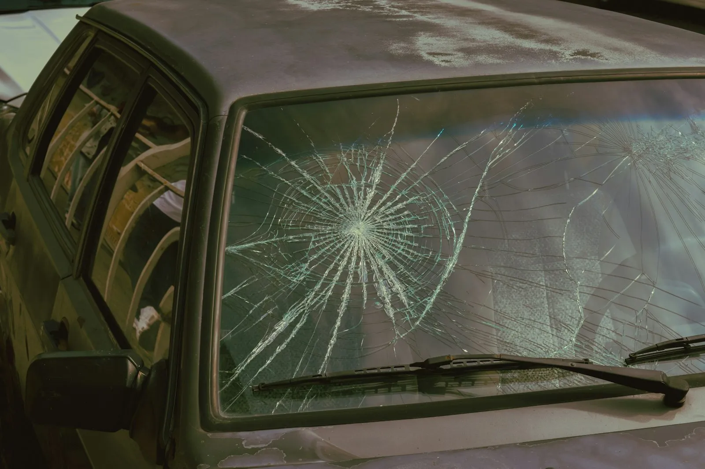
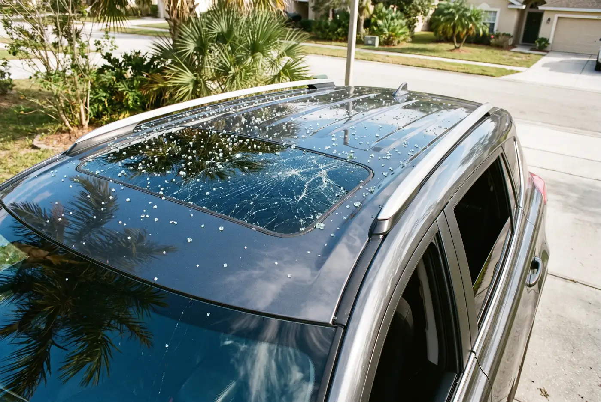
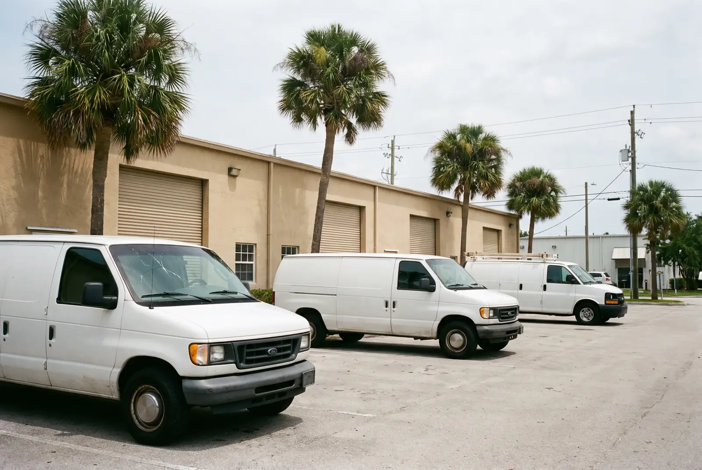
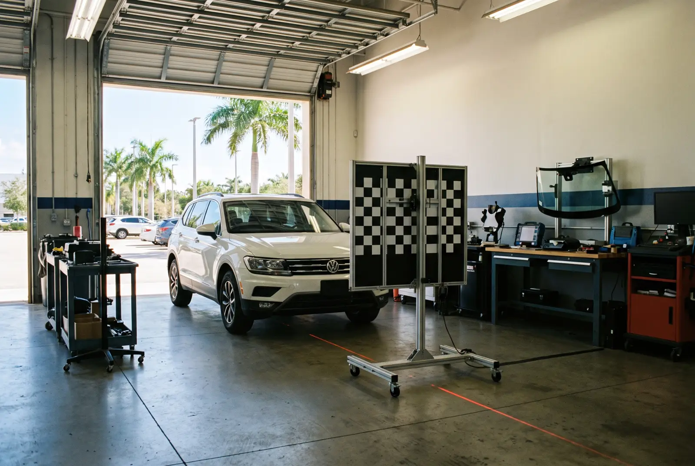

Our services
Auto Glass Services in West Melbourne
Each service is done on site. Pick the one that matches your damage, or see the full list of West Melbourne auto glass services.

Windshield Replacement
New front glass for long cracks, edge cracks and damage in your line of sight.
Learn about windshield replacement →
Chip & Crack Repair
Resin repair that seals a fresh chip or short crack before it spreads.
Learn about chip & crack repair →
Sunroof Glass Replacement
Shattered sunroof and panoramic roof glass cleaned up and replaced.
Learn about sunroof glass replacement →
Fleet & Commercial Glass
Windshields for work vans, trucks and company cars, done at your yard.
Learn about fleet & commercial glass →
ADAS Camera Calibration
Driver-assist cameras re-aimed after a new windshield goes in.
Learn about ADAS camera calibration →